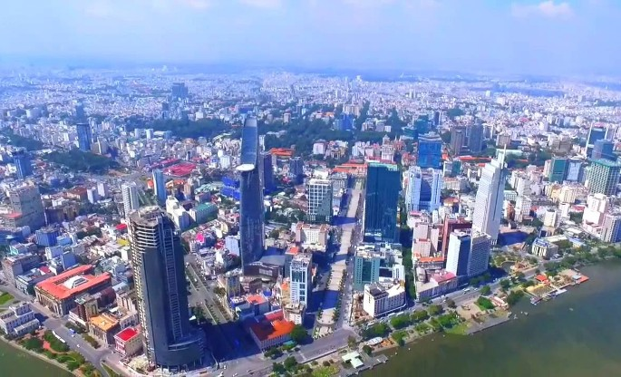

Điều chỉnh Quy hoạch chung TP Hồ Chí Minh
12:53, 11/02/2019
(Chinhphu.vn) - Thủ tướng Chính phủ đồng ý việc điều chỉnh tổng thể Quy hoạch chung Thành phố Hồ Chí Minh.

Thủ tướng Chính phủ yêu cầu UBND Thành phố Hồ Chí Minh phối hợp với các cơ quan liên quan thực hiện việc lập và trình phê duyệt Nhiệm vụ và đồ án điều chỉnh tổng thể Quy hoạch chung Thành phố Hồ Chí Minh; tổ chức đấu thầu lựa chọn đơn vị tư vấn thực hiện việc rà soát, đánh giá và lập đồ án điều chỉnh Quy hoạch chung Thành phố theo quy định pháp luật về đấu thầu; trên cơ sở đó, Bộ Xây dựng tổ chức thẩm định Nhiệm vụ và đồ án điều chỉnh Quy hoạch chung xây dựng Thành phố Hồ Chí Minh theo quy định pháp luật về quy hoạch đô thị.
UBND Thành phố Hồ Chí Minh cho biết, với vai trò đầu tàu kinh tế, thành phố sẽ phải phát triển liên tục, không ngừng. Vì thế quy hoạch bổ sung sắp tới sẽ phải đáp ứng được 2 tiêu chí là hấp dẫn đối với doanh nghiệp và tạo đồng thuận của xã hội. Thành phố sẽ bổ sung quy hoạch theo hướng mở, đồng thời ban hành quy chế quản lý quy hoạch, gắn quy hoạch với trách nhiệm người đứng đầu.
Sở Quy hoạch Kiến trúc Thành phố cho biết, điểm nhấn trong bổ sung quy hoạch sắp tới là quy hoạch gắn với phát triển nguồn lực của Thành phố, có cấu trúc đô thị phù hợp để giải quyết vấn đề về phát triển hạ tầng kỹ thuật, thích ứng biến đổi khí hậu và chống ngập.
Mục tiêu đến năm 2045 của Thành phố là xây dựng môi trường cạnh tranh cao, hoàn thiện hệ thống hạ tầng, phát triển không gian đô thị giảm thiểu tác động của biến đổi khí hậu, nâng cao hiệu quả sử dụng đất, cải tạo và phát triển đô thị hiện hữu, xây dựng cấu trúc đô thị phù hợp để giảm thiểu áp lực dân số vào khu vực trung tâm thông qua mô hình thành phố vệ tinh…
Thái Hiệp